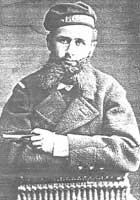
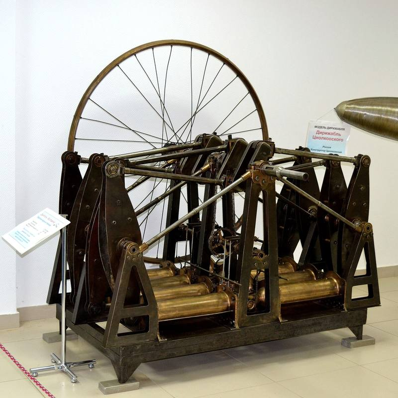

Мотор, который строили для неба
Читается подряд. Нажми на удар — откроется подробный разбор с источниками.
Серб Огнеслав Костович воевал за Россию на Дунае, а после войны, в 27 лет, остался в Петербурге.Узнать подробнееСвернуть

О. С. Костович. Фотография конца XIX века, автор неизвестен. Общественное достояние. Костович родился в 1851 году, в юности жил в Пеште, водил каботажные суда торгового флота. В русско-турецкую войну 1877–1878 годов он примкнул к русской армии, принял российское подданство и командовал пароходом Дунайской флотилии.
После войны, сопровождая имущество морского ведомства, 27-летний капитан оказался в Петербурге и увлёкся летательными аппаратами.
Источники: Центральный музей ВВС, «Двигатель Костовича»; А. Ф. Ткаченко, «Морской биографический словарь» (по публикации Международной военно-исторической ассоциации).
В декабре 1879 года он предложил управляемый аэростат: гондола, машина и баллон — одна жёсткая система.Узнать подробнееСвернуть
Проект одобрили и назвали «Дирижабль „Россия“». На постройку собрали паевое товарищество; его поддержали Д. И. Менделеев и М. А. Рыкачёв. 8 августа 1882 года на Охтинской верфи в Петербурге начали строить корабль.
О самом дирижабле — отдельный день нашего календаря, 29 января. Здесь — его сердце, мотор.
Источники: Центральный музей ВВС; «Российская авиация», «Дирижабль „Россия“ (проект О. С. Костовича)».
Паровая машина для неба не годилась: ей нужны котёл и запас угля, а это лишние сотни килограммов.Узнать подробнееСвернуть
До Костовича воздухоплавание знало только паровые машины. Костович отказался ставить пар на дирижабль: слишком много места уходило бы под уголь, котёл и машину, и корабль пришлось бы делать больше.
Источники: М. И. Левин, «Машина-двигатель. От водяного колеса до атомного двигателя», глава «Капитан русского флота Костович и его двигатель»; «Российская авиация».
Газовый двигатель Отто тоже не подходил: светильный газ пришлось бы возить на борту в баллонах.Узнать подробнееСвернуть
Двигатель Отто на заводе берёт газ из трубы. В полёте трубы нет: газ везут с собой в баллонах, а баллоны занимают место и весят.
Источник: М. И. Левин, «Машина-двигатель».
Костович решил жечь в цилиндрах не газ, а пары жидкого топлива — бензина.Узнать подробнееСвернуть
Находка дняЦикл тот же, что у Отто, — четыре такта. Новое — топливо: лёгкое жидкое, которое занимает мало места и превращается в горючую смесь в карбюраторе. Работать над мотором Костович начал в 1879 году, в 1880-м собрал уменьшенную модель с двумя цилиндрами и поставил её на катер своей конструкции.
Попробуй сам в модели ниже: чем крутить винт дирижабля.
Источники: Центральный музей ВВС; «Российская авиация», «Двигатель внутреннего сгорания для дирижабля О. С. Костовича».
Восемь цилиндров лежат двумя четвёрками навстречу друг другу, смесь поджигает электрический ток.Узнать подробнееСвернуть

Двигатель Костовича целиком, Центральный музей ВВС. Фото: Dmitry Ivanov, 2014, Викисклад, CC BY-SA 3.0. Цилиндры и поршни бронзовые, коленчатый вал, шатуны и коромысла стальные. Смесь из карбюратора идёт к впускным клапанам по четырём патрубкам. Зажигание электрическое, током низкого напряжения. Охлаждение водяное, смазка — из маслёнок. Большой маховик выравнивает ход.
«Российская авиация» пишет: электрическое зажигание и встречное движение поршней Костович впервые применил на двигателе внутреннего сгорания.
Источники: Центральный музей ВВС; «Российская авиация».
К 1884 году мотор был собран: до 80 лошадиных сил при 240 килограммах — три килограмма на каждую силу.Узнать подробнееСвернуть
Испытания и доводка шли до 1885 года. Центральный музей ВВС даёт мощность 60–80 лошадиных сил и называет 1883 год; «Российская авиация» — 80 сил и 1884 год. Масса у обоих — 240 килограммов.
Для сравнения: моторы первого немецкого жёсткого дирижабля LZ-1 (1900) давали всего 14 сил и весили 420 килограммов — 30 килограммов на силу, в десять раз тяжелее.
Источники: Центральный музей ВВС; «Российская авиация» (оба материала).
Через год, в 1885-м, Даймлер запатентовал мотоцикл. Его мотор давал половину лошадиной силы.Узнать подробнееСвернуть
29 августа 1885 года Готлиб Даймлер получил немецкий патент на мотоцикл: деревянная рама, одноцилиндровый мотор в 0,5 л. с., скорость до 12 км/ч. 10 ноября 1885 года на нём проехал сын изобретателя.
Выходит, мотор Костовича давал до 80 лошадиных сил, когда у первого мотоцикла Даймлера было полсилы.
29 января 1886 года Карл Бенц получил патент на трёхколёсную моторную повозку — её признают первым автомобилем.
Источники: Мотоциклетная федерация России, «29 августа — день рождения первого мотоцикла»; «Парламентская газета», 29.08.2019; «Коммерсантъ», «День рождения автомобиля», 2026.
Заявку на привилегию Костович подал в 1888 году. Патенты США и Англии пришли раньше русского — его выдали в 1892-м.Узнать подробнееСвернуть
14 мая 1888 года (по старому стилю) Костович просил Департамент торговли и мануфактур о десятилетней привилегии на «усовершенствованный двигатель, действующий бензином, керосином, нефтяным, светильным и другими газами и взрывчатыми веществами». Привилегию выдали 4 ноября 1892 года — через четыре с половиной года.
Источники: Большая советская энциклопедия, «Костович»; «Российская авиация».
Дирижабль «Россия» так и не взлетел: денег на постройку не хватило. Мотор остался без неба.Узнать подробнееСвернуть
После неудачи с дирижаблем Костович пытался выпускать свои двигатели как стационарные: в 1890-х один такой мотор в 64 силы работал на его заводе в Рыбацком. Широкого распространения мотор не получил.
Источники: Большая советская энциклопедия; Центральный музей ВВС; «Российская авиация».
Мотор засекретили. До 1947 года он простоял на заводе при Охтинской верфи, теперь его видно в Монино.Узнать подробнееСвернуть
Двигатель хранился в помещениях ремонтного завода при Охтинской судоверфи, затем в Доме авиации в Москве. В 1977 году он поступил в Центральный музей ВВС и стоит в зале № 1. В 1965 году сделали два макета, которые показывали посетителям, как работает мотор.
Источники: Центральный музей ВВС; «Российская авиация»; М. И. Левин, «Машина-двигатель».